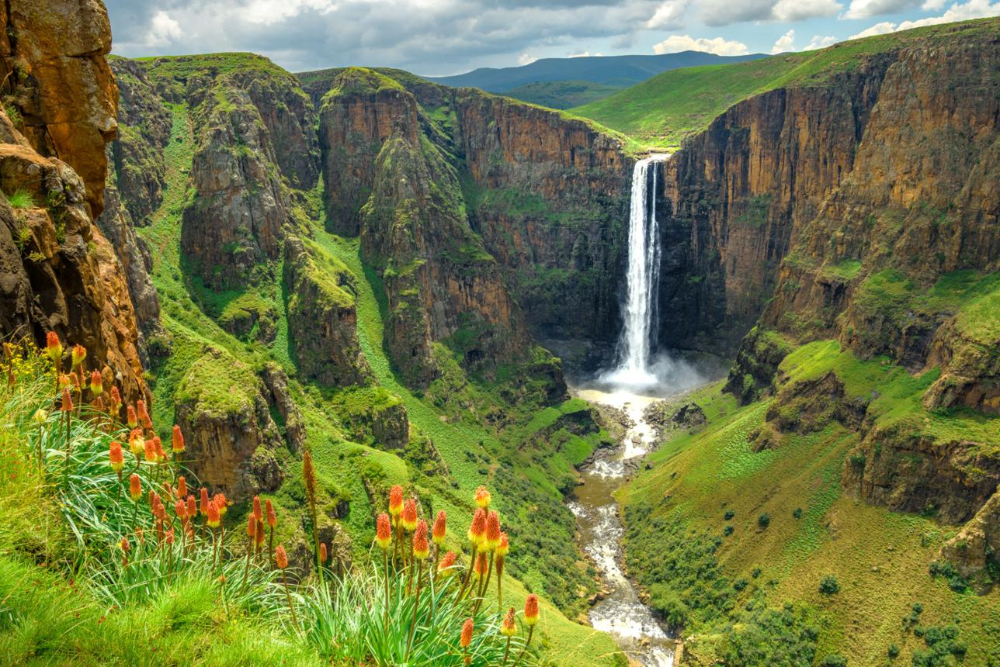
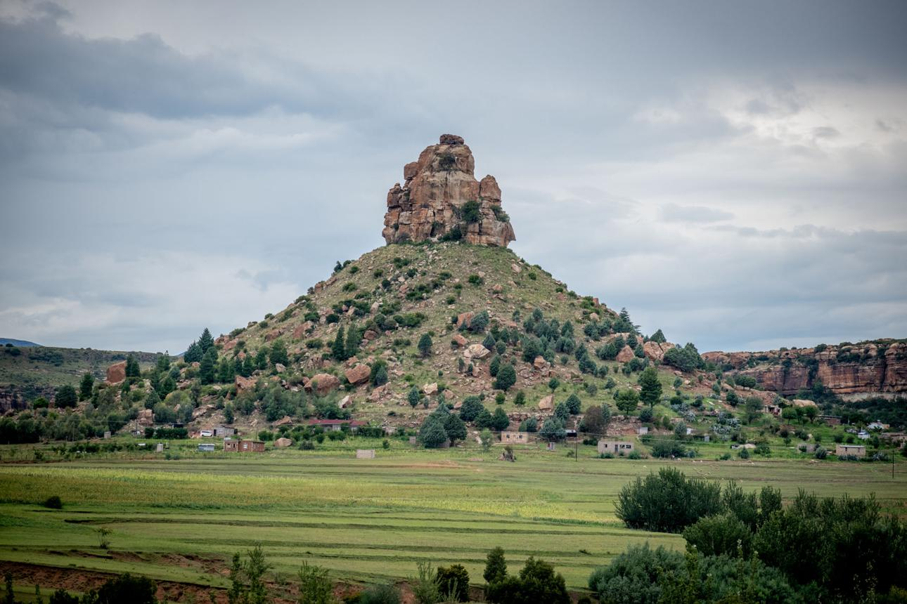
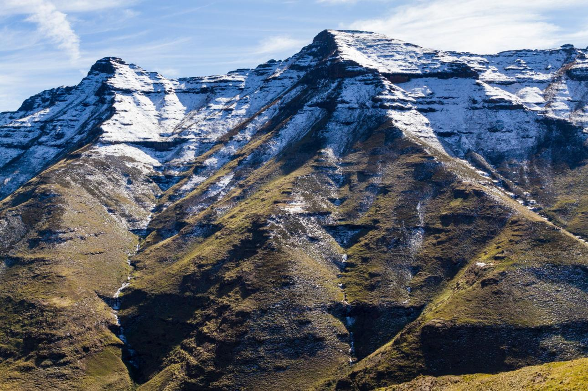
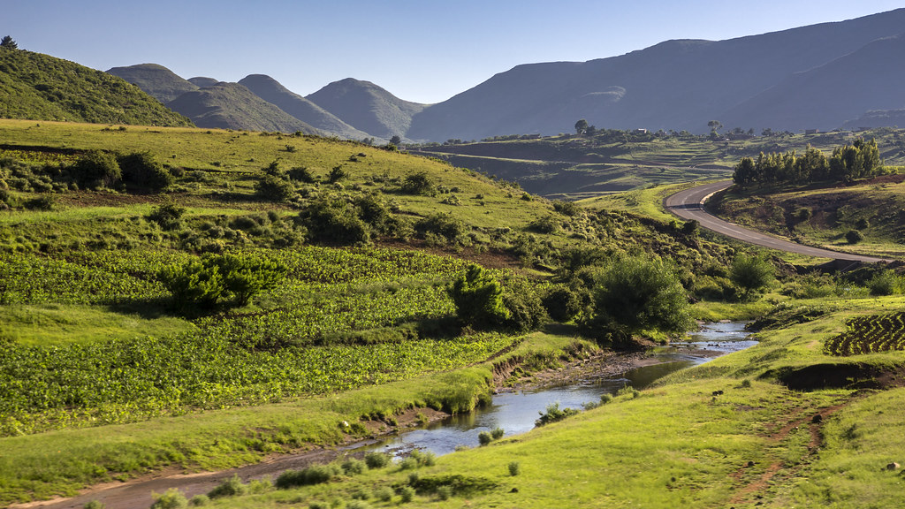
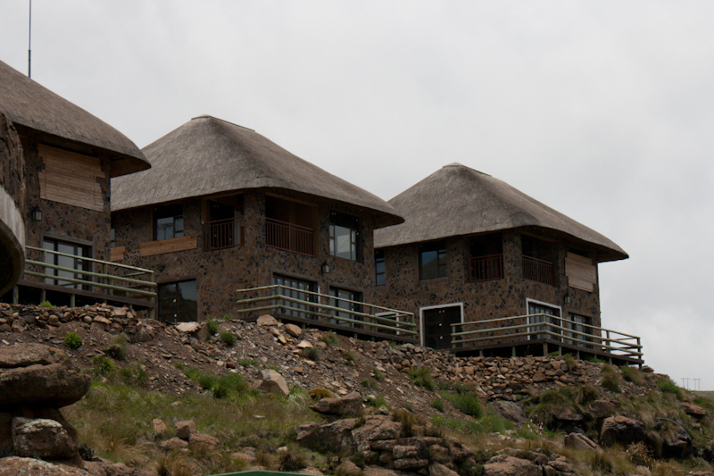
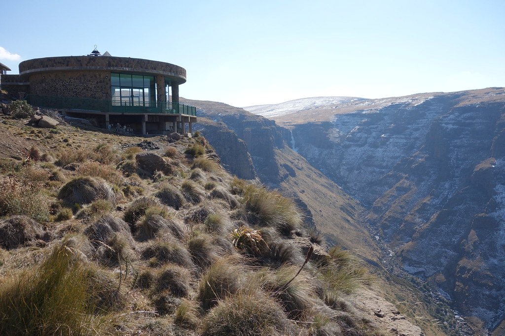
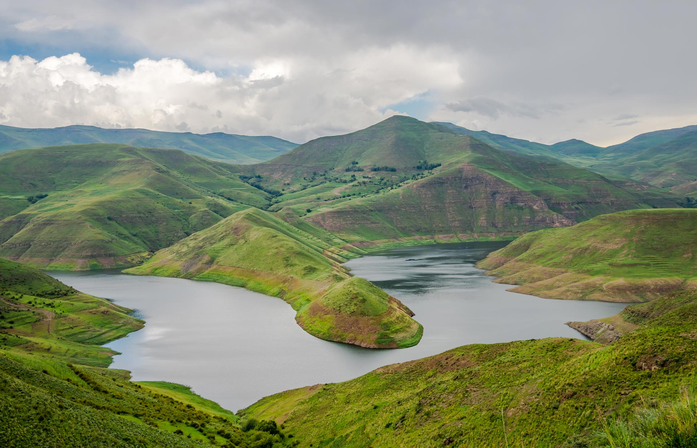
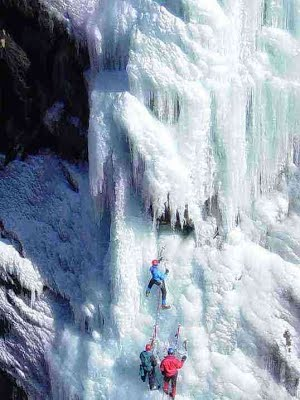
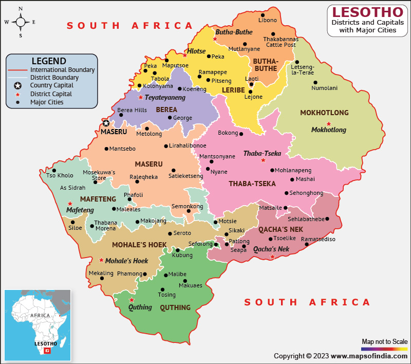

TOURISM IMAGE GALLERY










Our gallery shows Lesotho through Basotho lenses, not filtered marketing shots. Every image is from a local potographer, guides, and travelers who tagged us. you' will see real weather, real roads , real faces. we update weekly with seasopnal photos: snow in july, flowers in November. CLICK any image for location, phothographer credit, and tips to get same shot. this proves Lesotho is Photogenic without fake edits. we want you to arrive and say "it looks like that pictures." Authenticity is our brand. this is why we do not use stock pictures.
Images influence tourism decisions (Cooper et al., 2019). Furthermore, this aspect plays a significant role in enhancing the overall visitor experience within the destination. It also contributes to sustainable tourism development by balancing environmental conservation with economic benefits. Scholars emphasize that such initiatives improve destination competitiveness and long-term viability (UNWTO, 2019). In addition, community involvement ensures that tourism benefits are distributed more equitably among local stakeholders. Therefore, continuous improvement and strategic planning remain essential for maintaining high standards in the tourism sector.
Effective communication is essential for tourism success, as it ensures that visitors have access to accurate and timely information. Contact channels such as websites, email, and phone services allow tourists to make inquiries and bookings easily. Good communication enhances customer satisfaction and builds trust between service providers and visitors. In the digital era, online platforms play a crucial role in connecting tourists with destinations. Responsive communication systems improve the overall visitor experience. Positive interactions encourage repeat visits and recommendations. Tourism businesses rely on strong communication strategies to remain competitive. Providing clear and accessible information supports tourism growth. Therefore, communication remains a critical factor in destination management (World Bank, 2023).
Follow us for daiy updates, live weather, and roads conditions. instagram.@kinddominthesky-LS for photos and reels. facebook: Lesotho Tourism Official for events, festivals, and Q&A with locals. Tiktok:@visitlesotho for 30s pony trek and sani pass POVs. YouTube: full guides to afriski, Maletsunyane, and Thaba-busiu.
Email: phaxmakoboshane@gmail.com for trip planning help. WhatsApp:+266 56453178, or call:+26662606477 for quick answers 8am-6pm, for emergencies, dial 112 for the police and 121 for ambulance. we partner with the Tourism Environmental Authority Lesotho for permits and virified guides.
Lesotho map
